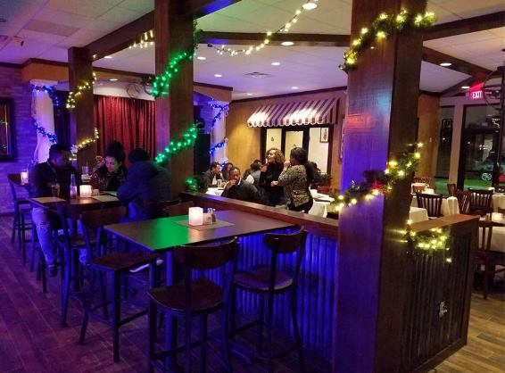

Addis is a Dallas-area jazz/fusion/world band that performs at Shebelle Ethiopian Cuisine and Bar in Far North Dallas.
We celebrate the cultural richness music by playing various styles, from straight ahead jazz to Latin, funk, and world music. We also admire the work of jazz vocalists--from Ella Fitzgerald to Sarah Vaughan to Nancy Wilson--and inject our performances with several vocal features.

From left to right: Isaac Byrd, Mike Camerata, Chirag Gokani, Colman Burks
Please watch our promotional video and clips from our November 2018 performance at Shebelle.
Also watch this clip of us recording at Audio Dallas Recording Studio for Chirag's demo CD, Search for Answers.
| Date | Time | Location | About |
|---|---|---|---|
| November 17th, 2018 | 7:30-9:00 p.m. | Shebelle | We had a fantastic debut performance! |
| November 11th, 2018 | 5:00-7:00 p.m. | University of Texas at Dallas | Private Event |

Circa 2006
Chirag is a second-year Eugene McDermott Scholar at the University of Texas at Dallas studying physics. Mentored by Dr. Kaloyan Penev, he develops software for citizen scientists to perform high-precision photometry with the hopes of increasing the rate at which exoplanets are discovered. Chirag loves sharing his passion for astronomy by collaborating with the UTD Physics Department the Society of Physics Students to organize public star parties.
In his free time, Chirag enjoys serving as a branch manager for IntelliChoice, a for-charity math tutoring organization. He also volunteers weekly at the Richardson Public Library, where he assists teaching technology classes. One of Chirag's foremost extracurricular interests is the exploration of the many connections between physics and music.
Chirag plays regularly with Stephen Houpt and the Crosswinds Jazz Band. To learn more about Chirag and his activities, please visit his website.

Mike recording with us at Audio Dallas in October 2018.
Mike Camerata, a graduate from UNT Music & Business schools, has been playing all sorts of percussion since elementary school. Mike plays with a variety of bands in the North Texas area and also teaches many of the percussion students at St. Mark's School of Texas in Dallas.

To learn more about Michelle, please visit her website.

insert Isaac's bio

Colman plays drum set in the Jasper High School jazz band and is the Drum Captain during marching season. He currently plays with multiple jazz combos including the Colman Burks Sextet and Quartet. Colman started piano lessons at the age of 5 and studied it for five years. He was in percussion in sixth grade and got his drum set the following summer; after that he never stopped playing. Inspired by his second cousin funk drummer Stanton Moore, he began to explore funk and jazz styles.
To learn more about Colman, please visit his website.